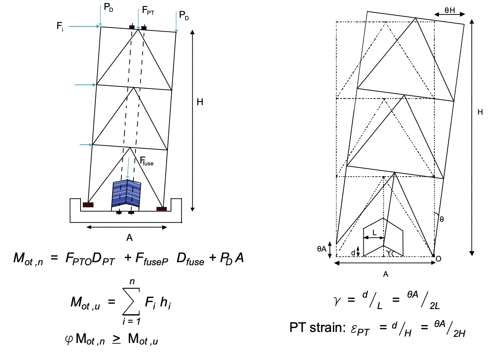
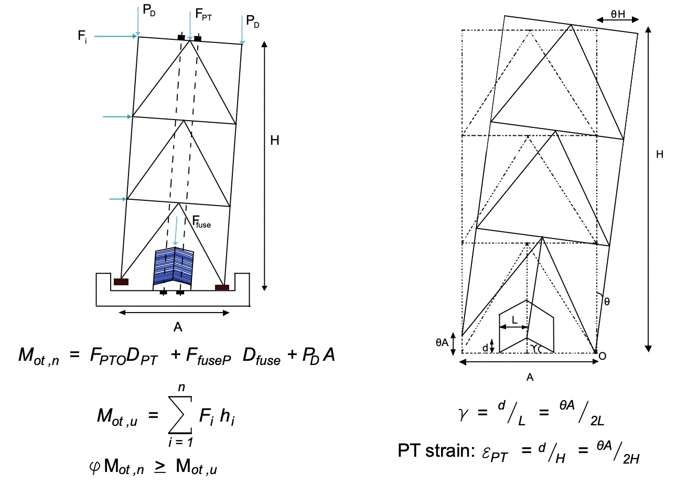

Let’s start by introducing some key terms
What is a fuse?
A fuse is a mass that is added to a structure to elongate the duration of the resistance behavior of a building. During an Earthquake, a fuse dissipates energy that is produced by the movement to decrease the energy being directly transmitted to the structure until it is damaged. There are different types of fuses, the type used in this rocking frame is the shear link fuse.

What are post-tensioning strands?
Post-tensioning strands are high-strength steel bars that are placed in concrete or other materials in order to reinforce it. “Post” meaning that those strands are just placed in the beginning according to specific design calculations. After pouring concrete over, the strands are stretched using a machine and held in place using anchors, and therefore strengthening the concrete.
What is lateral drift?
Lateral drift is displacement produced laterally to a specific point on the structure as it experiences shaking. This distance is commonly measured at a specified story level horizontally from the original position of the structure.
What is an overturning moment?
Overturning moment is an applied moment that can be caused by shear and lateral forces to the foundation, leading a footing to rotate, and therefore rotating the frame.
How does the frame behave?
Initial Behaviour
When the ground motion occurs, the column with the PT strands will raise up from the ground, resulting in the bottom of the frame rotating to one side. Since this frame exhibits rigid body behavior, if one side of the frame rotates, then the whole frame will rotate the same amount because of the overturning moment. The rotation of the frame will result in upward shear forces, causing drift in one direction.
Effect of the PT Strands
However, the PT strands in the column will counteract the rotation with a downward force, reducing the rotation of the frame, and therefore decreasing the drift.
Effect of the Fuse
Then the fuse will counteract the internal shear forces with a downward force as well, reducing the drift even more, and thus bringing the frame back to its original position (resulting in zero net drift)
Overall Impact of this Frame
The CRSBF system will cause the building to drift during the earthquake, but it will counteract the motion and bring the building back to its original position. Estimated damages will be decreased due to this behavior, since the building skeleton will remain strong, resulting in minimized structural repair costs despite the possibility of internal damage, depending on the magnitude of the earthquake.
There are different configurations that perform similarly
3D Model
2D Model

Factors that Affect the Seismic Performance
Gravity Load
Gravity load is the weight of a structure, including the self weight, materials, permanent objects, and fixtures.
Initial PT Force
The PT cable is connected to the column, ground, and all the way to the roof. Since PT strengthens the material, it applies a vertical force going downward on the column.
Frame Aspect Ratio
This ratio is simply the frame base width over the height.
Fuse Yield Strength
In general, a fuse absorbs energy. The yield stress of a fuse is the point where the behavior of the stress-strain curve of the fuse changes from elastic to plastic.
Fuse Strain Hardening Ratio
This ratio describes the stiffness of the fuse after yielding over the initial stiffness of the fuse. After the fuse yields, it goes into a non linear position until the link buckles. This ratio is also known as the capacity of the fuse.
These factors are normalized during the design calculations,
i.e. dividing the factors by the tributary seismic weight W.
Using these input values, there are lower, central, and upper
levels as shown in the following table. There are different combinations
that are used to show the three outcomes in the model that are discussed next.
 
